124
CAPÍTULO 2 - Operações com frações algébricas
Mínimo múltiplo comum entre polinômios
Nas operações de adição e subtração com frações algébricas, usamos as mesmas estratégias de cálculo que nas operações com frações numéricas: devemos reduzi-las ao menor denominador comum, usando o mmc de polinômios.
Vamos recordar, agora, como determinamos o mínimo múltiplo comum (mmc) entre números naturais.
Troque ideias com um colega e expliquem, no caderno, como determinar o mínimo múltiplo comum entre dois números naturais.
Determinem o mmc entre os números 30 e 80.
Agora vamos estudar como determinar o mmc entre polinômios. Observe as situações a seguir.
Situação 1
Para determinar o mmc entre dois ou mais polinômios, procedemos de maneira semelhante ao utilizado para números naturais.
Escrevemos os polinômios na forma fatorada.
O mmc será o produto entre os fatores não comuns e os fatores comuns, sendo estes elevados ao maior expoente.
125
6x4y = 2 ∙ 3 ∙ x ∙ x ∙ x ∙ x ∙ y
5x2y3 = 5 ∙ x ∙ x ∙ y ∙ y ∙ y
mmc (6x4y, 5x2y3) = 2 ∙ 3 ∙ 5 . x4 ∙ y3 = 30 x4y3
Logo, o mmc entre 6x4y e 5x2y3 é 30x4y3.
Situação 2
12a2b5c = 2 ∙ 2 ∙ 3 ∙ a ∙ a ∙ b ∙ b ∙ b ∙ b ∙ b ∙ c
9ab3 = 3 ∙ 3 ∙ a ∙ b ∙ b ∙ b
18a3b2 = 2 ∙ 3 ∙ 3 ∙ a ∙ a ∙ a ∙ b ∙ b
mmc (12a2b5c, 9ab3, 18a3b2) = 22 ∙ 32 ∙ a3 ∙ b5 ∙ c = 36a3b5c
Logo, o mínimo múltiplo comum será 36a3b5c.
Situação 3
Fatorando os polinômios temos:
7x2 = 7 ∙ x ∙ x
5x3 - 10x2 = 5x2 . (x - 2) = 5 ∙ x ∙ x ∙ (x - 2)
mmc (7x2, 5x3 - 10x2) = 35x2(x - 2)
Logo, o mínimo múltiplo comum será 35x2(x - 2).
126
Situação 4
Fatorando cada polinômio, temos:
a2 - 16 = (a + 4) ∙ (a - 4)
a2 - 8a + 16 = (a - 4)2 = (a - 4)(a - 4)
mmc (a2 - 16, a2 - 8a + 16) = (a + 4)(a - 4)2
Logo, o mínimo múltiplo comum será (a + 4)(a - 4)2.
Situação 5
Fatorando cada polinômio, temos:
x2 + 3x = x · (x + 3)
x2 - 9 = (x + 3) · (x - 3)
6x - 18 = 6 · (x - 3)
mmc (x2 + 3x, x2 - 9, 6x - 18) = 6x(x + 3)(x - 3)
Logo, o mínimo múltiplo comum será 6x(x + 3)(x - 3).
127
Reinaldo Rosa/Acervo da Editora
Reinaldo Rosa/Acervo da Editora
Reinaldo Rosa/Acervo da Editora
Adição e subtração com frações algébricas
O processo de cálculo da adição e da subtração com frações algébricas é semelhante ao usado para o cálculo de números racionais na forma fracionária.
Para adicionar duas ou mais frações com denominadores diferentes, devemos encontrar frações equivalentes às frações dadas com o mesmo denominador, observe:
Calculando 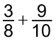
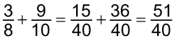
Agora, vamos efetuar adições e subtrações com frações algébricas, de maneira semelhante.
Situação 1
Calcule: 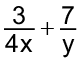
mmc (4x, y) = 4xy
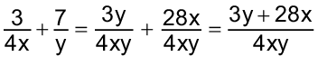
128
Situação 2
Calcule: 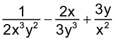
mmc (2x3y2, 3y3, x2) = 6x3y3
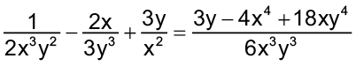
Situação 3
Calcule: 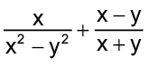
mmc (x2 - y2, x + y) = (x + y)(x - y)
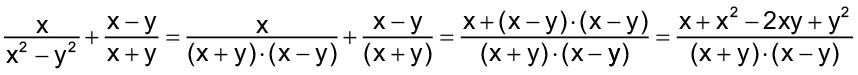
Encontre soluções
Em seu caderno, determine o mmc entre os seguintes monômios:
ab3 e a2;
2x3y2 e 6x2y2;
5a3b2c, 7a2b e 2a2bc2;
x4y2z, x2y e z3.
Agora, determine o mmc entre os seguintes monômios e polinômios:
2x e x - y;
4x2y e x3 - 7;
5a3, 3a2b e x3 - 12.
Determine, em seu caderno, o mmc entre os seguintes polinômios:
x2 - 2x e x2 - 4;
x - 7 e x2 - 14x + 49;
3x - 27 e x2 - 18 + 81;
a2 - 1 e a2 + 2a + 1;
y2 - 4, 2y + 4 e y2 + 4y + 4;
3m2, m2 - 25, m - 5 e m2 - 10m + 25.
Encontre soluções
Em seu caderno, calcule as seguintes adições:
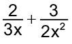
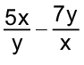
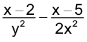
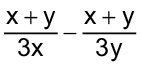
Agora, calcule:
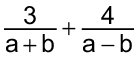
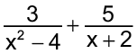
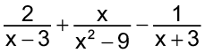
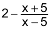
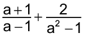
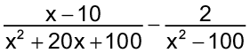
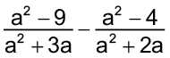
Qual fração algébrica deve ser adicionada a 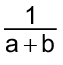 para obtermos 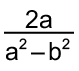?
Escreva a expressão 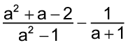 na sua forma mais simples.
Calcule o valor numérico da expressão 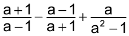, para a = 5.
129
Multiplicação e divisão com frações algébricas
Vamos recordar a multiplicação e a divisão de números racionais na forma fracionária.
Na multiplicação entre números racionais na forma fracionária, multiplicamos os denominadores entre si e os numeradores entre si, simplificando o resultado, se possível.
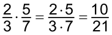
Na divisão entre números racionais na forma fracionária, multiplicamos a primeira fração pelo inverso da segunda.
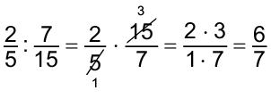
Na multiplicação entre frações algébricas, procedemos de maneira semelhante. Observe:
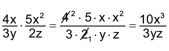
Veja outras situações a seguir.
Situação 1
Calcule: 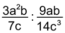
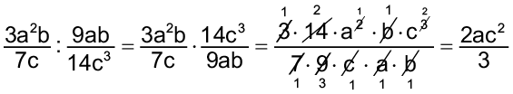
Situação 2
Calcule: 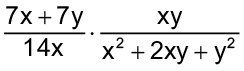
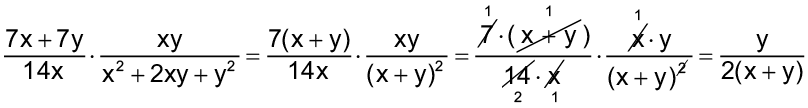
130
Situação 3
Calcule: 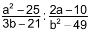
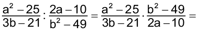
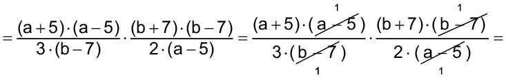
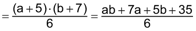
Encontre soluções
Em seu caderno, calcule as seguintes multiplicações:
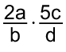
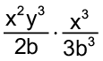
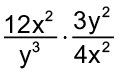
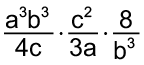
Agora, calcule as seguintes divisões:
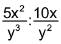
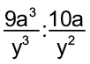
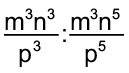
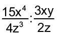
Efetue, no caderno, as multiplicações a seguir:
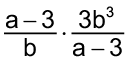
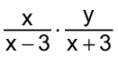
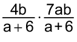
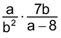
Agora, efetue as divisões a seguir:
Simplifique a expressão.
131
Em seu caderno, resolva as expressões a seguir:
(PUC-MG) A expressão é igual a:
1
2
-1
-2
(UMC-SP) Simplificando , obtemos: